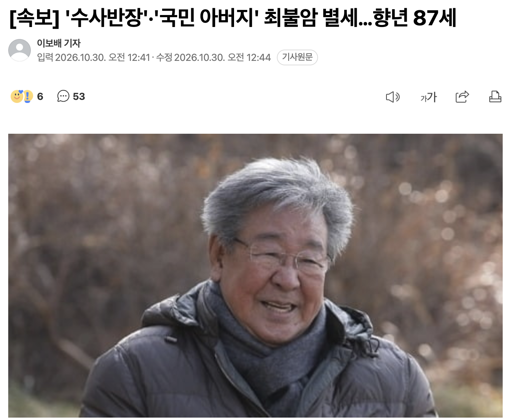

편히 쉬시길..

편히 쉬시길..
고인의 명복을 빕니다
ㅠㅡㅠ
저런
아이고
삼가 고인의 명복을 빕니다.
삼가 고인의 명복을 빕니다
비가온다.

삼가 고인의 명복을 빕니다ㅠㅠ
이순재선생님도 그렇고 어렸을때 한참 활동 하시던 유명한 어르신들 한분한분 부고소식 들려올때마다 세월이 흐르는게 확 느껴져서 감정이 이상하네...내가 느끼기에는 난 아직도 어른이 되긴 먼거같은데 에휴..
편안히 잠드시길 바랍니다
ㄹㅇ 기분이 이상해..
삼가 고인의 명복을 빕니다.
ㅠㅠ
아이고..
전원일기 식구들 한분씩 떠나네...
헐. ㅠㅠ
아...
삼가 고인의 명복을 빕니다.
삼가 고인의 명복을 빕니다.
삼가 고인의 명복을 빕니다. 멋진 배우.
흑흑 내 추억속 노년 배우들 하나둘 떠나가네 ㅠㅠ
삼가 고인의 명복을 빕니다
학생때 봤던 할아버지 역할 하던분들이 하나 둘 떠나기 시작하는구나
아이고.. 삼가 고인의 명복을 빕니다
마음이 적적하네
어릴적 할머니랑 같이 전원일기 부터 봤었는데..ㅠ
좋은 곳에서 편희 쉬세요
삼가 고인의 명복을 빕니다
요즘 Netflix에서 최불암 나오는 드라마 정주행 중이었는데
역사가 진다...
삼가 고인의 명복을 빕니다.
어르신 배우들 한분씩 떠나시는게 묘하다
삼가 고인의 명복을 빕니다
삼가 고인의 명복을 빕니다
헐...좋은 곳으로 가셨기를 ...
아이고...